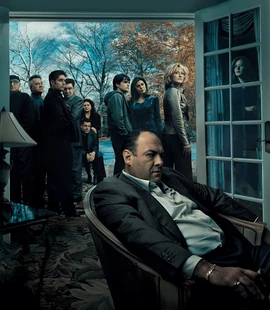

The Sopranos Fan Club
The Sopranos é uma série de TV de drama policial criada por David Chase e amplamente reconhecida como uma das maiores séries de todos os tempos.
Ela segue o protagonista Tony Soprano (James Gandolfini), um chefe da máfia ítalo-americano de Nova Jersey, que luta para administrar sua família e vida criminosa. Sofrendo de ataques de pânico, Tony frequenta sessões de terapia com a psiquiatra Jennifer Melfi (Lorraine Bracco), em quem ele confia.
Ao longo da série, Tony tem que lidar com seu tio, Junior (Dominic Chianese), sua esposa, Carmela (Edie Falco) e ameaças de mafiosos tanto dentro da família quanto externos, como a família Lupertazzi de Nova York.